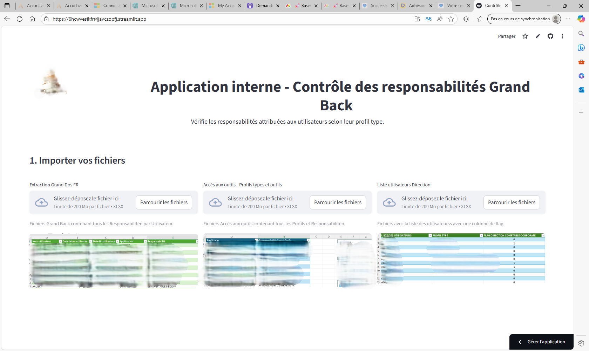
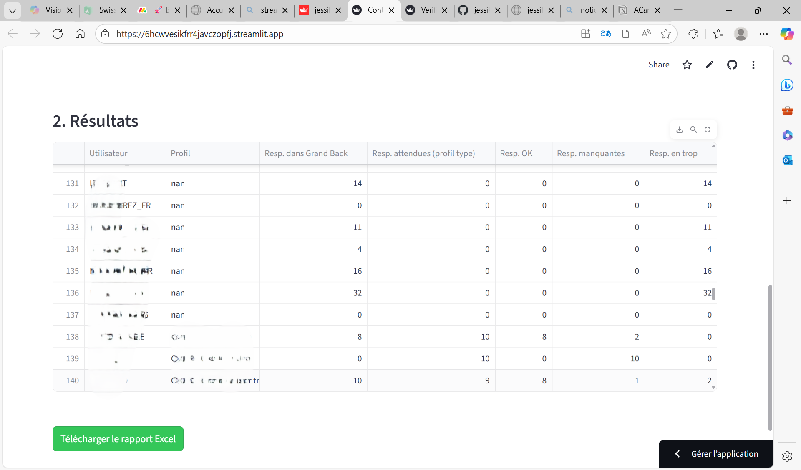

Vérification des Responsabilités Grand Back

🎯 Objectif :
Identifier rapidement les écarts entre les responsabilités réellement attribuées à un utilisateur et celles attendues selon son profil de poste.
🚀 Particularités :
✓ Chargement de fichiers Excel préformatés (profils, responsabilités, liste utilisateurs)
✓ Filtrage intelligent des profils avec flag validé
✓ Extraction automatique des responsabilités manquantes ou non attendues
✓ Export Excel complet (vue synthétique + détaillée)
✓ Visualisation claire des écarts + design personnalisé Accor
📊 Indicateurs clés :
- Nombre d’écarts par utilisateur
- Taux de conformité par profil
- Responsabilités en trop / manquantes
- Nombre d'utilisateurs concernés
🛠 Technologies utilisées :
Python (Pandas), Streamlit, ExcelWriter, CSS personnalisé
📸 Aperçu du Dashboard
